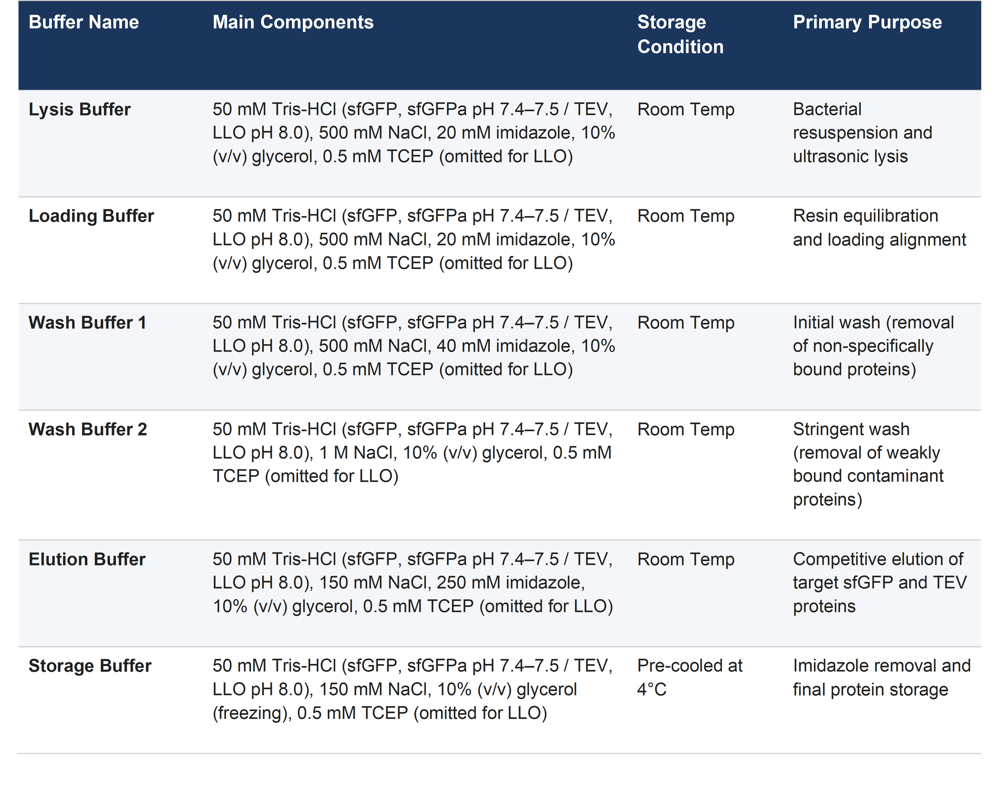
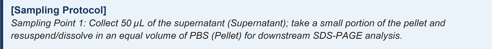
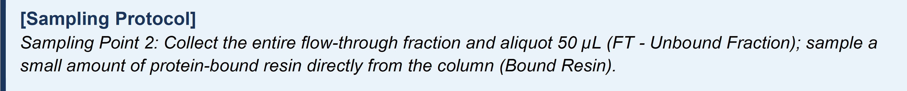
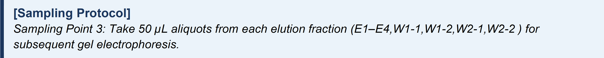
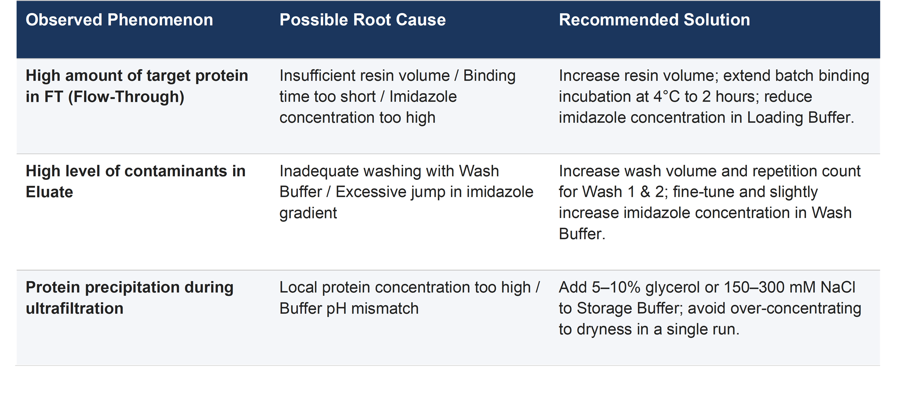
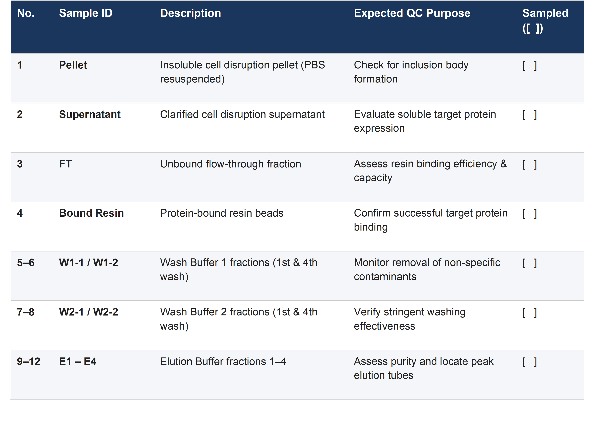

Western Blot
1. Basic Information & Objective
- Experiment Title: SDS-PAGE and Western Blot Detection
- Purpose: To separate protein samples by SDS-PAGE, transfer proteins onto a PVDF/NC membrane by wet transfer, and detect target proteins (His tag or GST tag) through specific antigen–antibody interactions.
- Applicable Samples: Recombinant proteins carrying either a His tag or a GST tag.
- Key Distinctions:
- His tag system: Use Yeasen WJ103 prestained protein marker; secondary antibody = Anti-Mouse IgG.
- GST tag system: Use Bio-Rad Precision Plus Protein Dual Color Standards (#1610374); secondary antibody = Anti-Rabbit IgG.
2. Materials
Reagents and Consumables
- Gel casting reagents (30% acrylamide, 1.5 M Tris-HCl pH 8.8, 1.0 M Tris-HCl pH 6.8, 10% SDS, 10% APS, TEMED)
- Running buffer, transfer buffer, TBST wash buffer
- Blocking buffer (5% non-fat dry milk or BSA in TBST)
- PVDF membrane (or nitrocellulose membrane), filter paper, sponges
- Prestained protein markers:
- For His-tag: Yeasen WJ103
- For GST-tag: Bio-Rad #1610374
- Primary antibody
- HRP-conjugated secondary antibodies:
- For His-tag: Anti-Mouse IgG
- For GST-tag: Anti-Rabbit IgG
- ECL chemiluminescent substrate
Equipment
- Vertical electrophoresis cell and power supply, wet transfer tank, shaker, chemiluminescence imaging system, 4 °C refrigerator
3. Procedure
3.1 Gel Casting (12.5% SDS-PAGE Gel)
3.1.1 Prepare resolving gel (12.5% bottom layer):
- According to the kit instructions (typically mix Solution A and B at 1:1), or prepare a standard 12.5% resolving gel formulation.
- Add 1% of total volume of coagulant (e.g., 10% APS) and 1% TEMED (i.e., 1:100 ratio), mix quickly.
- Pour the resolving gel between the glass plates, leaving space for the stacking gel (about 1.5 cm). Overlay with isopropanol or ethanol to flatten the surface.
- Allow to polymerize at room temperature for about 1 hour.
3.1.2 Prepare stacking gel (5% top layer):
- Prepare the stacking gel mixture according to kit instructions (A:B = 1:1) or standard recipe.
- Add 1% coagulant (1:100 ratio), mix well.
- Pour off the overlay, insert the comb immediately (avoid trapping air bubbles).
- Let polymerize at room temperature for 30–45 minutes.
3.1.3 Storage (if not used immediately):
- Cover the gel with a wet tissue (soaked in Milli-Q water) and store at 4 °C wrapped in plastic film.
3.2 SDS-PAGE Electrophoresis
3.2.1 Assemble the electrophoresis apparatus:
- Place the gel (with glass plates) into the inner chamber, with the shorter plate facing inward.
- Fill the inner chamber completely with fresh running buffer and wait 2 minutes to check for leaks. After confirming no leakage, add running buffer to the outer chamber until it covers the bottom of the glass plates.
3.2.2 Sample loading:
- Carefully remove the comb and rinse the wells with running buffer to remove any residual acrylamide.
- Loading volumes:
- Marker well: load 5 µL of the appropriate marker (Yeasen WJ103 for His-tag, Bio-Rad for GST-tag).
- Sample wells: load 20 µL of each protein sample. Ensure equal volumes in all wells – if necessary, top up with 1× sample buffer to reach 20 µL.
3.2.3 Run the gel:
- Close the lid, paying attention to electrode polarity (black to black, red to red), and connect to the power supply.
- First stage (stacking gel): constant voltage 80 V until the dye front compresses into a sharp line and enters the resolving gel (about 20–30 min).
- Second stage (resolving gel): increase to 100 V and continue until the dye front reaches the blue line at the bottom of the gel (or about 1 cm from the bottom).
- Important: If the inner chamber buffer leaks during the run, pause immediately, replenish buffer, and resume.
3.3 Wet Transfer
3.3.1 Prepare transfer materials: Cut a piece of PVDF membrane (activate in methanol for 1 minute) and filter paper to the gel size; equilibrate all in pre-chilled transfer buffer.
3.3.2 Assemble the "sandwich" (perform under transfer buffer to eliminate air bubbles):
- Black side (cathode) → sponge → filter paper → gel (gel facing the cathode) → membrane (membrane facing the anode) → filter paper → sponge → White side (anode).
- Gently roll a small roller over the sandwich to completely remove any trapped bubbles between the gel and membrane (bubbles cause uneven transfer).
3.3.3 Transfer conditions:
- Place the cassette into the transfer tank (ensure gel is on the cathode side, membrane on the anode side) and fill with pre-chilled transfer buffer.
- Run at constant current 400 mA; transfer time depends on protein size (typically 60–90 min).
3.3.4 Check transfer efficiency:
- After transfer, open the cassette and observe the marker bands on the membrane. If the marker is clearly visible on the membrane (and no colour remains on the gel), transfer was successful.
3.4 Blocking and Antibody Incubation
3.4.1 Blocking:
- Place the membrane in blocking buffer (5% non-fat milk or BSA in TBST).
- Incubate at room temperature on a shaker for 1 hour to block non-specific binding sites.
3.4.2 Primary antibody incubation:
- Dilute primary antibody 1:1000.
- Discard the blocking solution, add the diluted primary antibody (ensure complete coverage of the membrane).
- Incubate overnight at 4 °C on a shaking platform.
3.5 Secondary Antibody Incubation and ECL Development
3.5.1 Wash after primary antibody:
- Recover the primary antibody (can be stored for re-use).
- Wash the membrane with TBST for 10 minutes each, three times at room temperature on an orbital shaker.
3.5.2 Secondary antibody incubation:
- Choose the corresponding secondary antibody:
- For His-tag (mouse primary): use Anti-Mouse secondary.
- For GST-tag (rabbit primary): use Anti-Rabbit secondary.
- Dilute the secondary antibody 1:10,000 in TBST.
- Incubate the membrane with the diluted secondary antibody for 1 hour at room temperature.
3.5.3 Wash after secondary antibody:
- Discard the secondary solution.
- Wash with TBST for 10 minutes each, three times (thorough washing is essential to reduce background).
3.5.4 ECL chemiluminescent detection:
- Mix ECL substrate Solution A and B in a 1:1 ratio (prepare fresh, protect from light).
- Place the membrane (protein side up) on a clean surface, add sufficient mixed ECL reagent to cover the entire membrane.
3.5.5 Imaging and data storage:
- Place the membrane in a chemiluminescence imaging system.
- Start with an exposure time of 1 second and adjust as needed for optimal signal.
- Save the original images (TIF format) for subsequent analysis.
Protein Extraction Using RIPA Lysis Buffer
1. Brief Introduction
This protocol describes the complete workflow for preparing crude protein samples from bacterial cultures. The procedure includes preparation of RIPA buffer supplemented with protease inhibitor, bacterial growth to the target optical density, IPTG-mediated protein induction over two separate time courses (4-hour and overnight incubation), harvest of bacterial pellets, cell lysis, and storage of recovered protein samples. The resulting supernatant containing crude protein is available for subsequent protein quantification assays (BCA assay quantification, western blot analysis, etc.).
2. Materials
2.1 Reagents
- RIPA lysis buffer
- Protease inhibitor cocktail (HY-K0010, HY-K0021, HY-K0022)
- Luria-Bertani (LB) broth
- Ampicillin (Amp)
- BL21 competent E. coli
- 50% (v/v) glycerol
- 0.5 M IPTG stock solution
- Phosphate-buffered saline (PBS)
2.2 Consumables
- 15 mL centrifuge tubes, 1.5 mL microcentrifuge tubes, bacterial culture tubes, agar transformation plates, variable-volume pipette tips
2.3 Equipment
- Orbital shaker incubator, spectrophotometer (OD600 measurement), micropipettes, refrigerated benchtop centrifuge, −20 °C freezer, −80 °C freezer, ice bath
3. Procedure
3.1 RIPA + Inhibitors Preparation
*The whole procedure shall be performed on ice.
- Transfer 9.7 mL of RIPA buffer into a 15 mL centrifuge tube. (RIPA buffer is stored at 4 °C.)
- Add 100 µL of each inhibitor (three stocks: HY-K0010, HY-K0021 and HY-K0022) to the RIPA buffer.
- Mix thoroughly, and store the prepared buffer at 4 °C.
3.2 Bacteria Culture
- Pick a single colony from the transformation plates prepared in the previous week, inoculate it into 3 mL of LB medium supplemented with ampicillin in a culture tube.
- Incubate the culture with shaking at 37 °C overnight.
Control group (untransformed BL21):
- Inoculate 100 µL of BL21 competent cells into 5 mL of antibiotic-free LB medium.
- Incubate the culture with shaking at 37 °C overnight.
3.3 Protein Extraction (Day 1)
1) Glycerol Stock Preparation
- Combine 500 µL of the overnight bacterial culture and 500 µL of 50% glycerol in a 1.5 mL microcentrifuge tube.
- Store the glycerol stock at −80 °C.
2) Protein Extraction (IPTG Induction)
4-hour induction group
- Inoculate 500 µL of overnight bacterial culture into 5 mL of ampicillin-supplemented LB broth within a culture tube.
- Measure the OD600 value every 30 min. Allow cultures to reach an OD600 of approximately 0.6 within two hours.
- Add 5 µL of 0.5 M IPTG to each tube to induce protein expression at 37 °C for 4 h.
- Transfer 1 mL of induced bacterial culture into individual 1.5 mL microcentrifuge tubes (five tubes in total).
- Centrifuge the aliquots at 5000 rpm for 10 min.
- Discard the supernatant, resuspend each bacterial pellet in 100 µL of PBS.
- Store the resuspended pellets at −20 °C.
Overnight induction group
- Prepare cultures as described in Step 1, grow them until an OD600 of 0.6 is reached.
- Add 5 µL of 0.5 M IPTG to each tube to induce protein expression at 30 °C overnight.
3.4 Protein Extraction (Day 2)
1) Collection of 4-hour-induced and overnight-induced protein samples
*Samples from the 4-hour induction group start from Step 4.
- Transfer 1 mL of overnight-induced bacterial culture into each 1.5 mL microcentrifuge tube.
- Centrifuge the tubes at 5000 rpm for 10 min.
- Discard the supernatant, resuspend each pellet in 100 µL of PBS. Combine pellets from 2 mL of starting culture into a single tube after resuspension.
- Perform a second centrifugation at 5000 rpm for 2–3 min.
- Remove the supernatant. Add 250 µL of inhibitor-supplemented RIPA buffer per 5 mL of initial bacterial culture.
- Keep the samples on ice for 60 min.
- Centrifuge the lysate at 16,000 rcf, 4 °C for 20 min.
- The resulting supernatant contains the target protein and can be used for downstream quantification assays.
Protein Purification via Ni-NTA Affinity Chromatography
1. Basic Information & Objectives
Estimated Duration: Approx. 8–9 hours | Target Proteins: sfGFP, TEV, sfGFPa, LLO
Objective: To purify recombinant sfGFP, sfGFPa, LLO, and TEV proteins from Escherichia coli lysate supernatant using gravity flow chromatography, capitalizing on the high affinity between recombinant His-tags and Ni-NTA resin. Buffer exchange is subsequently performed via ultrafiltration, followed by resin cleaning and regeneration.
Core Principle: To prevent protein degradation or aggregation/precipitation, all steps—including column loading, washing, elution, and concentration—must be carried out under pre-cooled conditions at 4 °C or on ice.
2. Reagents, Buffers & Equipment
2.1 Buffer Formulations

2.2 Key Reagents & Equipment
Instruments & Equipment:
- High-speed refrigerated centrifuge
- Ultrasonic cell disruptor/sonicator
- Amicon Ultra Centrifugal Filter Units (10 kDa MWCO)
- Electrophoresis power supply & gel imaging system
Reagents & Consumables:
- Ni-NTA Agarose resin (3–4 mL)
- Gravity flow chromatography columns
- PBS buffer
- 100 mM EDTA (pH 8.0)
- 0.5 M NaOH
- 100 mM NiSO4
- 20% Ethanol
3. Pre-Experimental Preparation
- Turn on the refrigerated centrifuge 40 minutes in advance and pre-cool to 4 °C.
- Place all required buffers at their designated appropriate temperatures ahead of time.
- Prepare ice buckets and microcentrifuge (EP) tubes (pre-labeled with sample names).
4. Detailed Operating Procedure
Phase 1: Cell Disruption & Lysate Supernatant Preparation (4 °C / On Ice)
Step 1 (Cell Resuspension): Discard the supernatant from the harvested bacterial cell pellet (centrifuged at 4,000 × g, 4 °C for 15 min). Add Lysis Buffer to resuspend the pellet, adjusting the total volume to approximately 100 mL. Mix thoroughly until no visible cell clumps remain.
Step 2 (Ultrasonic Lysis): Place the sample vessel in an ice-water bath. Set the sonicator parameters (75% amplitude, 1 min sonication). Gently swirl and mix the tube for 1 min after each cycle. Repeat for a total of 4 cycles (total sonication time: 4 min).
Step 3 (Clarification): Transfer the lysate into high-speed centrifuge tubes and clarify by centrifugation at 30,000 × g, 4 °C for 20 min. Carefully transfer the clarified supernatant into a new beaker/tube.

Phase 2: Ni-NTA Resin Pretreatment & Batch Binding (4 °C Shaker)
Step 4 (Resin Pretreatment): Rinse the gravity column with Loading Buffer to wet the bottom frit. Pipette 3–4 mL of Ni-NTA agarose resin slurry, add an appropriate volume of Loading Buffer, and mix gently. Allow the resin to settle naturally at 4 °C, then discard the supernatant. Repeat this wash 2 times.
Step 5 (Batch Binding): Combine the clarified lysate supernatant with the pre-washed Ni-NTA resin and Loading Buffer. Incubate on a rotary shaker at 4 °C with gentle tumbling for at least 1 hour to allow complete protein binding.
Step 6 (Column Packing & Flow-Through Collection): Transfer the mixture into the gravity column and collect the flow-through liquid.

Phase 3: Contaminant Washing & Target Protein Elution (4 °C)
Step 7 (Column Wash):
- Wash with Wash Buffer 1 (4 times): Thoroughly resuspend and pipette the resin upon adding buffer each time. Collect the 1st wash fraction (W1-1) and the 4th wash fraction (W1-2).
- Wash with Wash Buffer 2 (4 times): Collect the 1st wash fraction (W2-1) and the 4th wash fraction (W2-2).
Step 8 (Gradient Elution): Insert the bottom cap into the column. Add 4 mL of Elution Buffer, gently resuspend the resin by pipetting, and let it stand for 1 minute. Remove the bottom cap and collect the entire eluate. Repeat this process 4 times, sequentially collecting and labeling elution fractions E1, E2, E3, and E4.

Phase 4: Ultrafiltration Concentration & Buffer Exchange
Step 9 (Pooling & Primary Concentration): Based on SDS-PAGE preliminary inspection, pool the elution fractions containing the highest target protein purity (typically E1 and E2). Transfer the pooled fraction into a 10 kDa MWCO Amicon Ultra centrifugal filter unit. Centrifuge at 4,000 × g, 4 °C to concentrate the volume down to approx. 1–2 mL.
Step 10 (Imidazole Removal & Buffer Exchange): Top up the centrifugal filter unit with Storage Buffer up to the 15 mL mark, then centrifuge again at 4,000 × g to concentrate back to 1–2 mL. Repeat this buffer exchange step 2–3 times to thoroughly remove residual imidazole. Collect the final concentrated protein.
Phase 5: Quality Control & Purity Assessment (SDS-PAGE & Coomassie Staining)
Step 11 (Protein Electrophoresis): Collect all saved samples (12 tubes in total), add 5× SDS Loading Buffer, denature by heating, and load into gel wells according to the following order:
1. Pellet | 2. Supernatant | 3. FT | 4. Bound Resin | 5. W1-1 | 6. W1-2
7. W2-1 | 8. W2-2 | 9. E1 | 10. E2 | 11. E3 | 12. E4
Run condition: Constant voltage at 250 V for 45 minutes. After electrophoresis, stain with Coomassie Brilliant Blue and destain to visualize protein purity.
Phase 6: Ni-NTA Resin Regeneration & Storage
- Water Wash: Wash with 5 column volumes (CV) of deionized water (ddH2O).
- Stripping: Strip nickel ions using 5 CV of 100 mM EDTA (pH 8.0) until the resin turns from blue to white.
- Water Wash: Rinse with 10 CV of ddH2O to completely remove residual EDTA.
- Alkaline Wash / Stripping: Wash with 5 CV of 0.5 M NaOH and allow to soak/incubate in the column for 10–15 minutes.
- Neutralization Wash: Rinse with 10 CV of ddH2O until the effluent pH reaches neutral (~7.0).
- Re-charging: Re-charge with 3–5 CV of 100 mM NiSO4 solution until the resin restores its sky-blue color.
- Final Wash & Storage: Rinse with 10 CV of ddH2O to remove unbound nickel ions. Regenerated resin can be used immediately or suspended in 20% ethanol and stored at 4 °C.
5. Troubleshooting Guide

6. Appendix: Sampling QC Checklist
